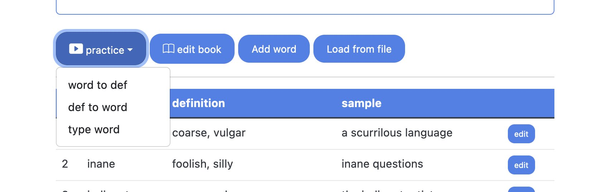

Table of Contents
1. はじめに
英単語を覚えるのに苦労していませんか。単語カードよりも効率よく覚えられるボキャビル用Webアプリ vocaBull を作って公開しています。スマホやPCからアクセスできます。

vocaBullには以下の特長があります。巷にある単語カードアプリやWebサービスの主要機能はあると思います。
- 覚えていない単語をインテリジェントに優先して繰り返し練習できる
- Shifting Learning Window機能。後で詳しく説明します
- vocaBullならではの機能です
- 普通の単語カードモード以外に、スペルが練習できるタイプ練習モードがある
- 最初に単語に慣れるのに、意外とストレスが少なくて便利です
- 単語や例文を発音してくれる
- 間違って音を覚えてしまうことが避けられます
- 出題する順番がランダム
- ボキャビル本でありがちな、単語の並びで覚えてしまうことが避けられます
- 他のユーザーが作成、公開している単語帳を「図書館(ライブラリー)」で借りて練習できる
- Quizlet等、ボキャビル用Webアプリのキラー機能と思います
- 作者が単語帳を修正すると、自動で反映されます
- 覚えたい単語一式をファイルからインポートできる
- 一つずつ単語を登録するより、楽に早くできます
- サーバーのデータが無くなっても安心。単語帳や学習状況のローカルバックアップ機能
- 全て無料で、煩わしい広告もありません
アクセスはこちらから: https://achiwa912.pythonanywhere.com/
emailを登録するだけで使えます。スマホやPCからアクセスできますので、気軽に試していただけるとうれしいです。
2. vocaBull
vocaBull は単語カード+アルファの機能を持つボキャビル用Webアプリです。以下の3つのモードがあります。
- 単語カード(単語 → 意味) →
word to defモード - 単語カード(意味 → 単語) →
def to wordモード - スペル練習 →
type wordモード
vocaBullはWebアプリなので、iPhoneやAndroidなどのモバイルデバイスからもアクセスできます。私のGoogle Pixel 7 Pro上のFirefoxからはこんな感じです:

3. Shifting Learning Window機能
新しい単語を覚えるには繰り返しが効果的ですが、通常の単語カード(アプリ)では、効率よく覚えるために必要な繰り返しが得られないと考えています。
例えば、フラッシュカードに200単語あったとして、その200単語を一つずつ繰り返していったら、最初の方の単語はすっかり忘れてしまっているでしょう。ほとんど覚えていない状態が何巡も続くので、ストレスフルで挫折しやすいと思います。
vocaBull はこの問題に対して、少数単語の頻繁な繰り返しと、単語帳全体の繰り返しを組み合わせることで、挫折しづらくてより効率よく単語が覚えられる Shifting Learning Window 機能をサポートしました。

この少数単語の頻繁な繰り返しを「Learning Window(学習ウインドウ)」で実現しています。Learning Windowは10単語分の大きさを持ち、最初は単語帳の中からランダムに選んだ10単語が入っています。
Learning Window内の10単語を繰り返し練習するうち、一つ二つの単語を覚えていくでしょう。そうしたら、Learning Windowは覚えた単語をまだ覚えていない単語で置き換えます。こうして、Learning Windowは常に現在覚え途中の10単語だけが入っていることになります。覚えようとしている少数の単語を集中的に学習できる、というわけです。Learning Windowは単語帳内を進んでいき、最終的に単語帳の最後まで到達します。そうしたら、次のサイクルが始まります。このプロセスは単語帳内のすべての単語を覚えてしまうまで続きます。
つまり、Learning Windowは高頻度の繰り返しを、単語帳全体が低頻度の繰り返しを表しています。
他のボキャビル用アプリには、単語に手動でスターをつける機能がついていて、スターの付いている単語のみ練習したりできますが、これを常に自動でバランスよくやってくれるのが Shifting Learning Window 機能です。高頻度の繰り返しと低頻度の繰り返しの組み合わせは、忘却曲線 の考え方にも沿っていると思います。
4. 使い方
4.1. 登録、ログイン
- ブラウザーから https://achiwa912.pythonanywhere.com にアクセスします

- 右上のメニューアイコンから
Login>Click here to registerとクリック


- emailアドレス、ユーザー名、パスワードを入力してアカウントを作成します
- 数分程度待つとemailが送られてくるので、確認のためのconfirmation linkをクリックします
- emailアドレスとパスワードを使ってログインします
4.2. サンプルブックを選ぶ
- 最初、サンプルのワードブック(sample_<ユーザー名>)が登録されており、それには単語が5個入っています。

- サンプルワードブックをクリックして開きます
4.3. フラッシュカードでボキャビル
Practicemenu をクリック >word to defまたはdef to wordを選びます

- フラッシュカードの練習ページが表示されます

- ワードカードをクリックすると裏面の答えが表示されます
- 水色の面が単語を、青緑の面が意味を意味します
- 例文は常に裏面に表示されます
- カードを何度もクリックして表、裏を表示させることもできます
(音符) wordやexampleをクリックすると発音が確認できます- これはブラウザー機能を利用していて、若干不自然なところがありますが、学習に大きな支障は無いと思います
- もし覚えていなかったら
(親指ダウン) once moreをクリックします。その単語は近いうち(10単語かそれ以内)にまた現れます - なんとか覚えたら
(親指アップ) okay!をクリックしスコアを+1します- vocaBull は10個の最も低いスコアの単語を選ぶため、しばらくその単語は出てきません
- すでに知っている単語だったら
knew it!ボタンをクリックしてスコアを+5することもできます Back to bookをクリックして選択しているワードブックに戻ります
4.4. 単語をタイプしてスペルを学ぶ
Practiceメニューをクリック >type wordモードを選択します- vocaBull が単語の意味を表示します

- 答えをタイプして
Submitをクリックするかリターンキーを押します - 正解/不正解と判断されるので、いずれにしても4回単語をタイプします
- Tip: タブやリターンキーを使って入力ボックス間を移動できます
- 間違ったら同じ単語が近いうちに出てきます

(音符) wordやexampleを押すと発音してくれます
4.5. 単語帳(wordbooks)を準備する
4.5.1. 図書館で単語帳を借りる(ライブラリー機能)
一番手っ取り早い方法です。他のユーザーが作って公開している単語帳を図書館で借りると、自分で作った単語帳のように練習することができます。
- 右上のメニューアイコンから
libraryを選ぶと、図書館ページに移動します
- 図書館には他のユーザーが作って公開している単語帳が並んでいます
- 単語帳をクリックして詳細を確認します

(カートアイコン) Checkoutをクリックするとその単語帳は緑色でホームページの単語帳リストに現れます

4.5.2. 新規に作成し、単語登録する
新たに単語帳を作成して単語を追加することもできます。サンプルのワードブックに単語を追加していってもいいでしょう。
(本のアイコン) Addボタンをクリックします

- 単語帳の名前を入れ、レベルを選び、言語コード(US英語なら en-US)をタイプして
Submitをクリックします- 言語コードは発音機能が利用します。英文に日本語ja-JPを指定すると、和製英語が聞けます(笑)
- 言語コード一覧は下のリンクセクションにて。英語以外の言語も選べます。
- 新たに作成した単語帳をクリックし、
Add wordをクリックします - 単語と意味、例文をタイプして
SubmitをクリックするとPracticeボタンが有効になります- 単語をいくつか登録してください
4.5.3. あるいは、ファイルから単語を読み込む
覚えたい単語がたくさんある場合、ファイルを作って読み込むのが早いです。
- メモ帳等のテキストエディタやexcelで単語定義ファイルを作ります
- 1行に1単語です
- 行には、単語、意味、例文をタブ(
\t)で区切って並べます。例文はオプションです
<word>\t<definition>[\t<sample>]
- excelの場合はcsv形式でセーブしてください
- 例:
strident shrill, harsh, rough in more strident tones lassitude weariness, fatigue deleterious bad, harmful a deleterious effect on health
- 新たに単語帳を作り、それをクリックします
Load from file>Browse...をクリックし、単語定義ファイルを選んでSubmitをクリックします
4.6. バックアップと復旧
vocaBull はまだ開発中のため、バグなどによりサーバーにある全ての単語や学習状況が失われてしまうリスクがあります。この状況に対処するため、 Export all と Import and restore 機能をサポートしました。これを使って、あなたの単語帳や学習状況をあなたのPCにバックアップしてください。最悪、サーバーのデータが全て無くなっても復旧することが可能です。
Export all はあなたの単語帳、その中にある単語、及び学習状況をJSONファイルに出力します。
Import and restore はバックアップした JSON ファイルを読んで復旧します。この時、もし同じ名前の単語帳が存在したら、単語などはそれに追加されます。同じ単語が登録されていたら、意味や例文を上書きします。学習状況に関しては、既存のものとバックアップファイルのものの、より進んだ状態を選びます。
例えば、 Export all してすぐに Import and restore したら、単語帳、単語、スコアは全く変わりません。
4.6.1. バックアップの仕方
- ホームページ上でBackup and restoreセクションが見えるまでスクロールします
Export allをクリックして単語帳や学習状況をvocabull.jsonというローカルファイルにセーブします
4.6.2. 復旧の仕方
- 全てが消えたらアカウントも無くなりログインできなくなっているので、再度アカウント登録をします
- 新たなアカウントでログインした後、ホームページ上でBackup and restoreセクションが見えるまでスクロールします
Import and restoreボタンをクリックしますBrowse...をクリックしてvocabull.jsonを選びSubmitをクリックします
5. リンク
- ここにデプロイしています: https://achiwa912.pythonanywhere.com/
- プロジェクトはこちら: https://github.com/achiwa912/vbs
- 言語コード一覧: http://www.lingoes.net/en/translator/langcode.htm
- 注) ブラウザーがサポートしているもののみ有効です